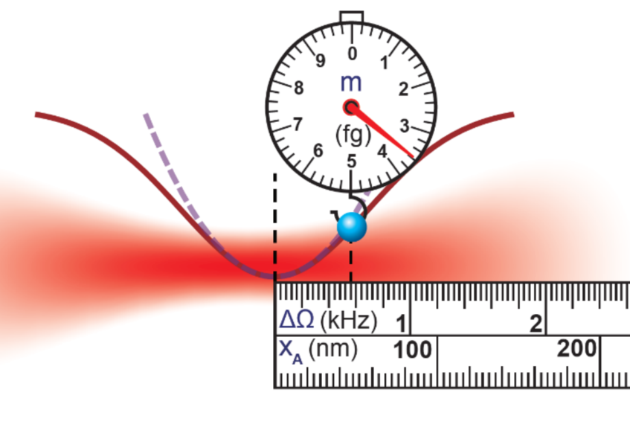
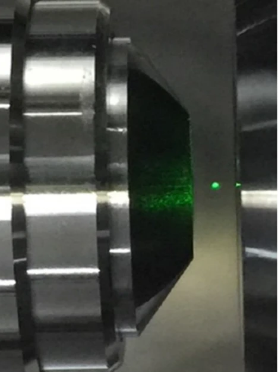
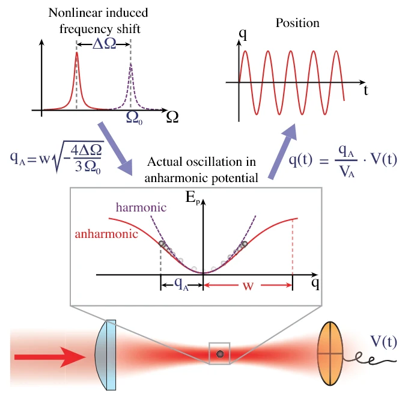

Research overview
Our research focuses on precision sensing and quantum control with optically levitated micro- and nanoparticles in vacuum. Optical trapping eliminates mechanical contact with a substrate, while operation in vacuum reduces gas damping. Interferometric displacement detection offers a route toward quantum-limited readout of the particles’ center-of-mass motion. We develop this platform for force, acceleration, electric-field and torque sensing, as well as single-particle mass measurements and pressure sensing.
Building on low dissipation, efficient optical detection and feedback control, we aim to prepare and control motional quantum states of levitated particles and explore macroscopic quantum phenomena. Our research targets ground-state cooling of center-of-mass motion, motional squeezing, coherent wavepacket expansion and entanglement generation. We seek to exploit nonclassical motional states as quantum resources for precision sensing, combining quantum state control with levitated optomechanics to enable quantum-enhanced measurements.


Research highlights
Highlight 01 · Light: Science & Applications · Accepted
Phase-locked phonon laser for ultraweak force sensing
We operate an optically levitated nanoparticle in a phase-locked phonon laser mode and use a carrier-modulation measurement scheme for ultraweak force sensing. Reducing the trapping laser power suppresses laser-induced force noise, while phase locking stabilizes the carrier for measurements over long averaging times.
Highlight 02 · Physical Review Letters · Applied Physics Letters
Precision metrology through nonlinear displacement calibration
The nonlinearity of a focused Gaussian optical potential provides a reference for displacement calibration without requiring prior knowledge of the particle’s mass. This supports quantitative position and mass measurements in high vacuum.
By averaging trajectory segments with the same initial displacement, we extend nonlinear displacement calibration to medium vacuum. This enables measurements of the mass and density of a single levitated nanoparticle over a wider pressure range.
Highlight 03 · Physical Review Research
Nonequilibrium state control and the Mpemba effect
Energy-dependent feedback lets us shape a levitated nanoparticle’s energy distribution and construct nonequilibrium steady states, including narrow-linewidth phonon lasing. This provides an experimentally controllable platform for microscopic thermodynamics.
Using an effective asymmetric double-well potential in energy, we observed the Mpemba effect: an initially hotter state can relax to a colder equilibrium faster than an initially colder state. The experiments reveal the role of relaxation pathways and energy barriers.
Highlight 04 · Physical Review A · JOSA B
Mapping displacement information in scattered light
Position detection depends on the displacement information carried by scattered light and the efficiency with which it is collected. We introduced the information radiation field (IRF) to describe this information and determine optimal position detection schemes for Mie particles.
Spatial scanning measurements subsequently mapped the distribution of displacement information and reconstructed the information radiation patterns (IRPs) for the three motional axes. These measurements provide an experimental approach to characterizing optical detection efficiency.
Highlight 05 · Physical Review Applied · Chinese Physics B
Single-particle pressure and mass sensing
Second-order coherence separates dissipation processes in a levitated oscillator and enables nanoscale pressure sensing across a wide range. The resulting vacuum gauge uses the nanoparticle itself as the sensing element.
A temperature-independent mass measurement method uses a sinusoidal electrostatic driving force to track the mass of an individual levitated nanoparticle. Measurements also follow changes in its temperature and charge as the surrounding pressure varies.
Highlight 06 · Applied Physics Letters · Chinese Optics Letters
Digital feedback cooling and three-dimensional position detection
Digital parametric feedback controls the particle’s motion by switching the trapping-laser intensity. The method cools the center-of-mass motion and provides programmable control of the levitated oscillator.
A Dove-prism detection scheme provides three-dimensional position measurement of a levitated nanoparticle in vacuum, supporting motion readout and feedback experiments.
Highlight 07 · Chinese Optics Letters
Asymmetric dual-beam optical trapping and cooling
An asymmetric dual-beam optical trap with high numerical aperture provides a platform for the optical levitation and cooling of microparticles. This work extends the trapping configurations available for motion control and precision measurements.